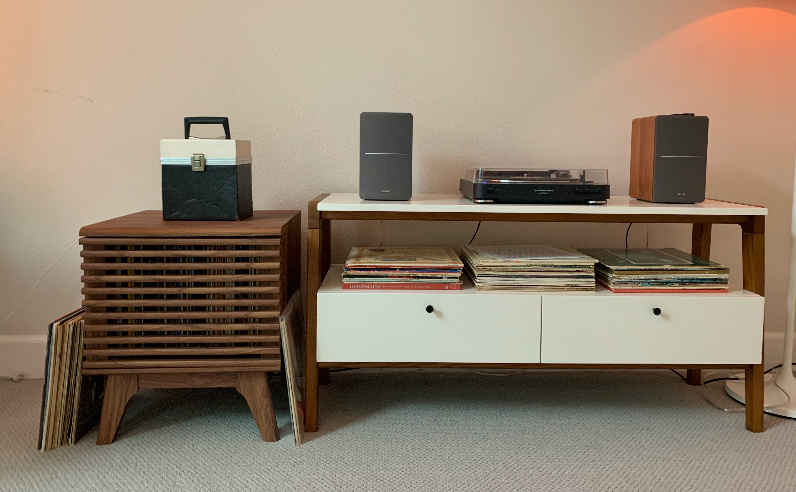

About
I could talk about records forever. I love that every record is different. I love the way that artists can tell a story with their packaging and jacket, sleeve, and record label designs. I’ve gotten most of my records second hand so I’m not sure whether the sleeves that come with some of the records are the originals, but that’s what makes it special. I love being able to hold my music, and to have my own physical copy of my music. To me it’s unique and very special.
Growing up I didn’t have a phone, and got one when I was 16 years old, so obviously that set me apart from my peers, and limited my internet access, so I mainly listened to music on CDs and records. I've always held meaning and memories in music, and have taken parts of my taste in music from my Dad, my Mum, my Pop, and of course from my own explorations and experiences. Since middle school and high school my taste in music has changed a lot, but I still like and listen to all of the music in my collection. If you couldn’t tell, I used to be obsessed with the Beatles (although once a beatlemaniac, always a beatlemaniac), and now I’d call myself a casual Beatles enthusiast with special interest in George and Paul. I’m proud of my collection so far, and even though I’ll move, and my collection will change, it’s something that will always bring me joy.
